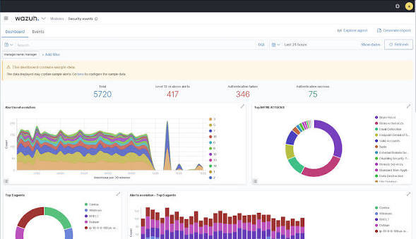
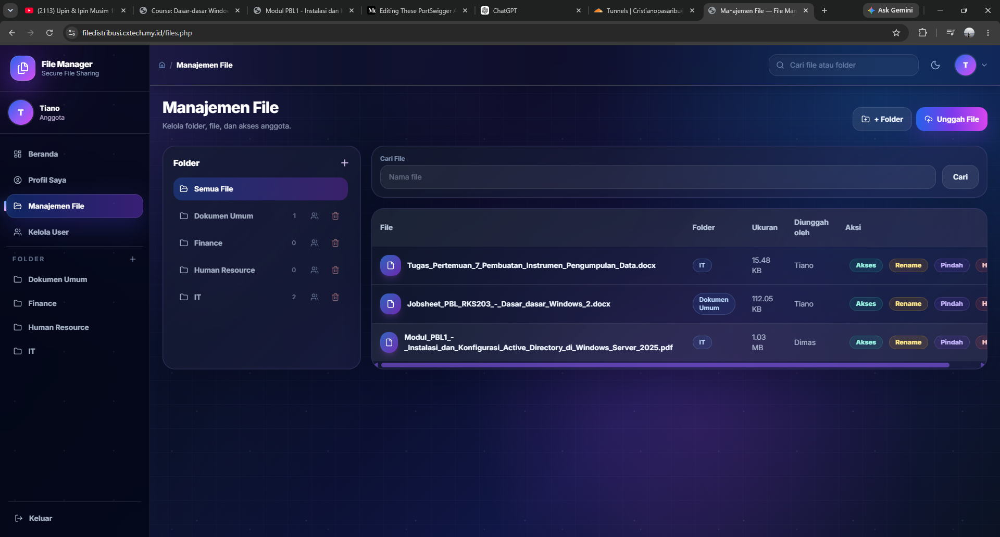

About
This is projects use website RBAC as target for secure access control and wazuh as monitoring tool.
This is projects use website RBAC as target for secure access control and wazuh as monitoring tool.
This is the projects section. I will showcase my projects here.






This is the documentation project.
This is the report section. I will provide a detailed report on the project status and findings.
I hope this improves the use of Suricata for monitoring and security.